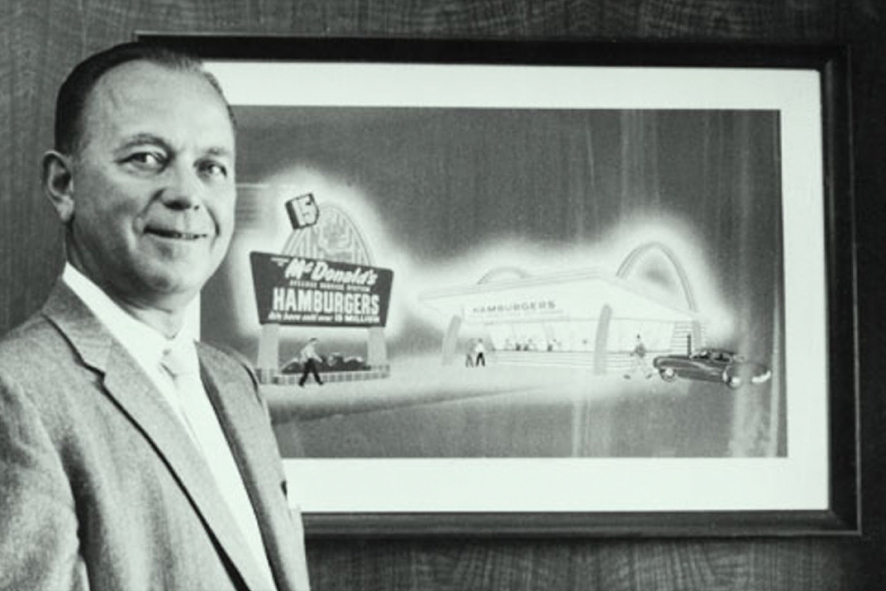
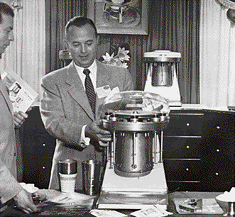
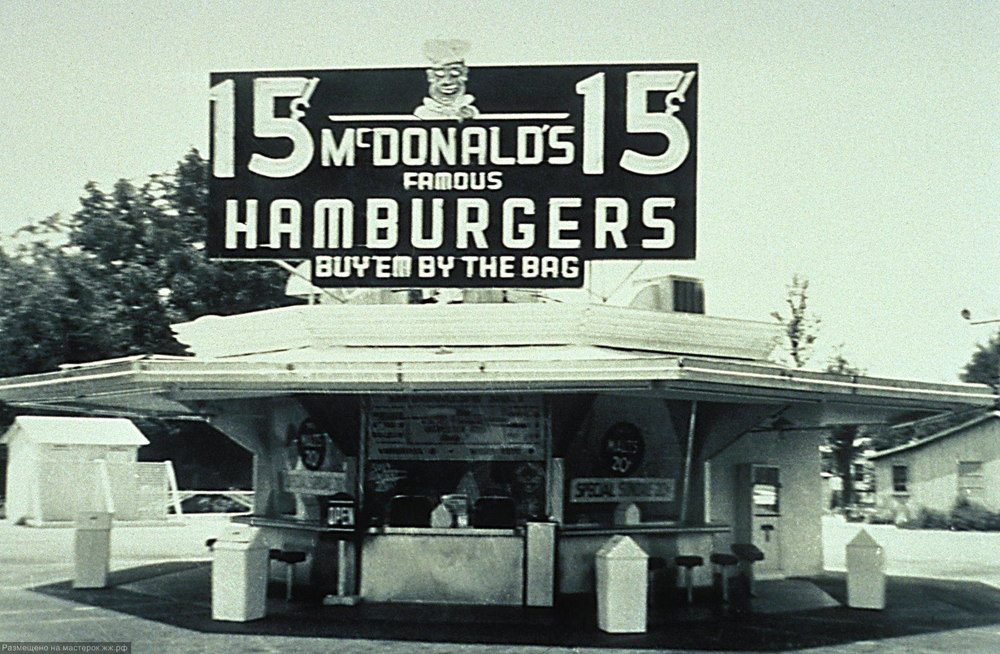
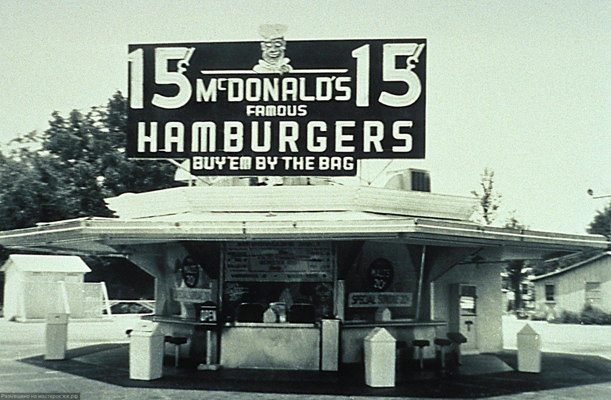
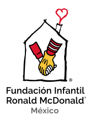
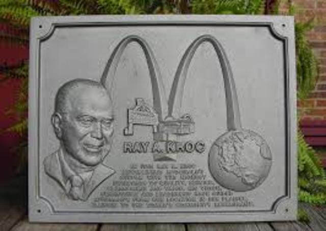
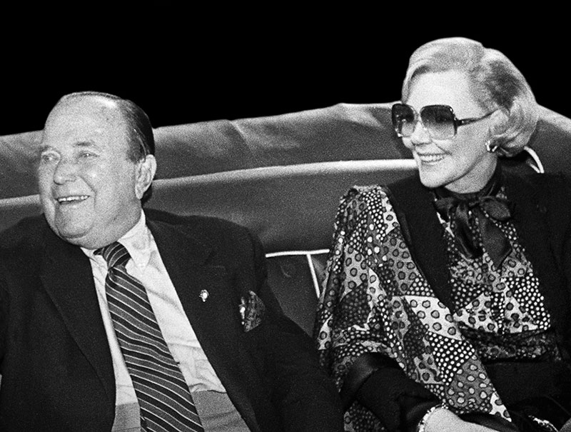
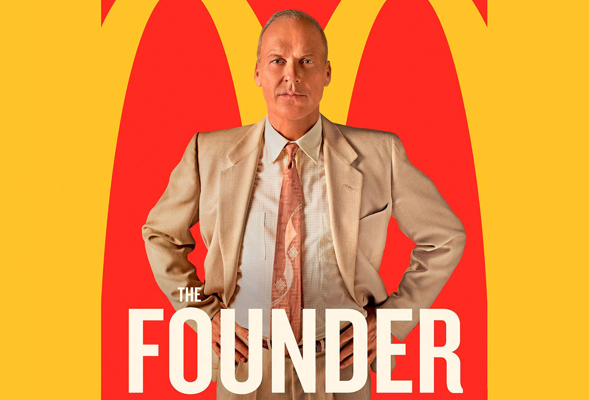

BIOGRAFIA DE RAY KROC (MCDONALDS)
Ray Kroc nació el 5 de octubre de 1902 en Oak Park, Illinois (Estados Unidos), en una familia de
emigrantes checos de clase trabajadora. Durante la Primera Guerra Mundial falsificó
su edad para hacer un curso de conducción de ambulancias en la Cruz Roja, en el que
coincidiría con un aún desconocido Walt Disney, pero nunca fue enviado al frente
Sin formación académica más allá del instituto, tuvo que dedicarse a distintos negocios y en los años 1930 se especializó en la venta mayorista de vasos de papel. Posteriormente montó su propia empresa de ventas, Prince Castle Sales, y empezó a comercializar máquinas de batidos para restaurantes.
En 1954 Ray Kroc conoció a los hermanos Richard y Maurice McDonald, propietarios de una hamburguesería en San Bernardino llamada McDonald's. A diferencia de otros restaurantes de los suburbios, los hermanos McDonald apostaron desde 1948 por un autoservicio con menú limitado de bajo coste, orientado a familias, que se preparaba con rapidez gracias al Speedee Service System: un minucioso sistema inspirado en la producción en cadena.
 

En el plano político siempre apoyó al Partido Republicano. En 1972 llegó a donar 255.000 dólares a la campaña de reelección de Richard Nixon. El senador Harrison A. Williams denunció que con dicha donación pretendía evitar una propuesta de ley sobre salario mínimo. También destacó por su filantropismo: donó dinero a la investigación de enfermedades, y en 1974 impulsó la creación de la Fundación Infantil Ronald McDonald. Su esposa Joan Kroc legó más de 200 millones de la herencia a la radio pública NPR.
Los últimos años de Ray Kroc estuvieron marcados por un infarto y una rehabilitación por alcoholismo. El empresario falleció en un hospital de San Diego el 14 de enero de 1984 a los 81 años, víctima de una insuficiencia cardíaca, y fue enterrado en el cementerio El Camino de Sorrento Valley. Su fortuna está estimada en más de 500 millones de dólares.
En el 2016 se estrenó la película biográfica The Founder, dirigida por John Lee Hancock y en la que Kroc es interpretado por Michael Keaton. La historia está centrada en las maniobras del empresario para expandir McDonald's y arrebatar el control total del negocio a sus fundadores
